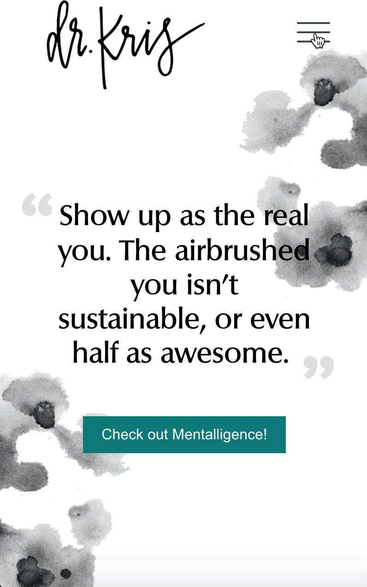
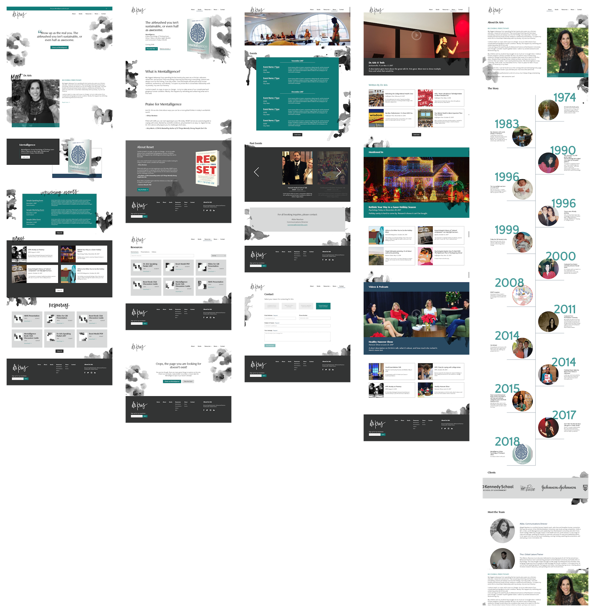
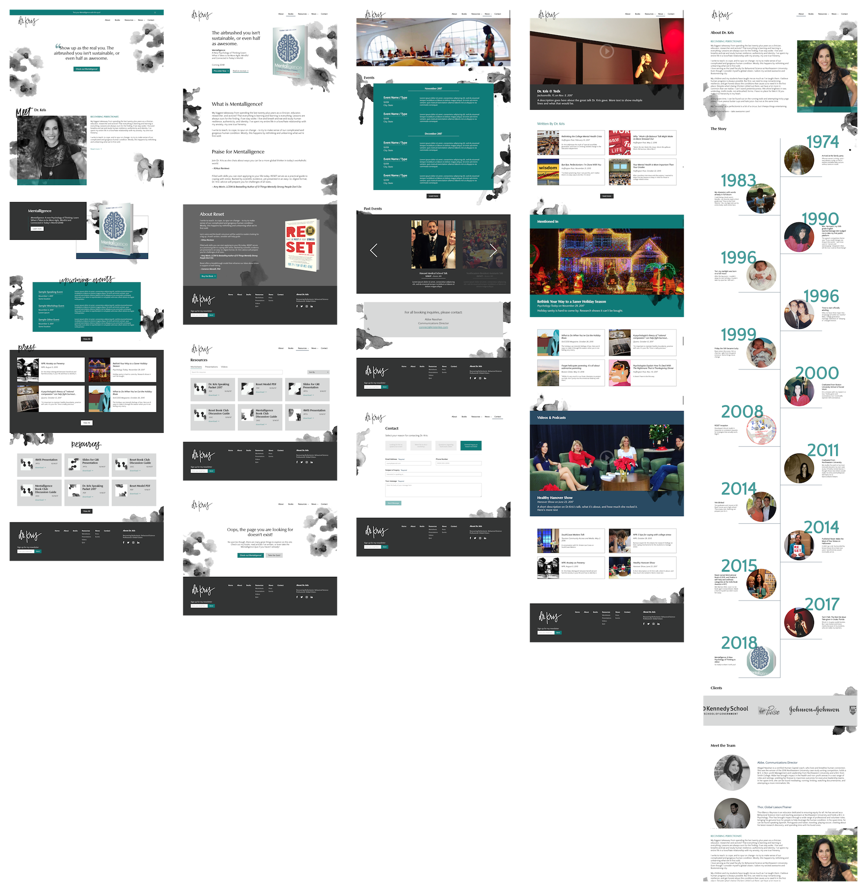

Animation I created to showcase the interaction with the mobile nav to my teammates.

A team photo with our client, Dr. Kris, after handing off the brand book, website, and additional design assets.
Position:
Studio Developer @ Scout Studio
Dates:
Sep. - Dec. 2017
Tags:
Web dev, interaction design, client work, CMS
My first client project at Scout Studio, a student-run design studio at Northeastern University, was for Dr. Kristen "Kris" Lee, the department head of Behavioral Sciences at Northeastern. She is the author of RESET and has spoken at many events, giving tips to deal with stress, mental health, and mindfulness. Dr. Kris came to Scout as a client wanting to find help with developing her personal branding and to create a new website for her to house her content. Dr. Kris was also gearing up to speak at an upcoming TEDx event, and also wanted design work for her slides and other forms of collateral.
Our team consisted of four members: a project lead, two other designers, and myself acting as the sole developer. We were the smallest team on this round of client projects, however we knew we would be able to make a big impact by being given the opportunity to develop a brand and website from scratch.
Before our team began work on any designs or wireframes we first conducted a few brainstorming exercies, consisting of brand analysis, requirements gathering for the website, and persona development for her target audience. This was my first time doing these activites in a real-world scenario and the experience helped us a lot in terms of planning down the road for what we had to accomplish. While these sessions did initially shift our schedule back from starting wireframing and developing font and color patterns, they were invaluable for keeping our priorities clear.
"How Might We" (HMW) is a brainstorming activity used to define goals and promote discussion on how to achieve them.
With the planning stage behind us, our team was ready to dive right into creating wireframes of each screen of the site. The team worked together on the website for the main portion of our semester, since it ultimatley would be the main deliverable for our client. During this phase I helped created wireframes since development had not begun yet. I was able to contribute my skills to the team by creating wireframes that keep function and good engineering sense in mind.
Each week our team worked on different screens, alternating the development and design cycles after the first few weeks of getting initial wireframes drawn up. While the other designers worked on creating wireframes for the next webpages, I was building out the wireframes in code to make sure our layout and foundation were both responsive and transitioned well to an interactive medium. Once we had the majority of the pages mocked out and in a spot we felt confident with, we began to switch gears into higher fidelity designs, finally adding color, type, and images.
Two previous wireframe iterations shown with the final choice shown in the center.
Initial visual directions for the website landing page. From here, sections were chosen from each for the final design.
While I helped work more on design at the beginning of our cycle, I began to transition to a more engineering focused role once the core design decisions were finalized and the iterative revision process began. A key piece of the website we were delivering was the ability to scale - for Dr. Kris to be able to control the content herself, without relying on a developer for every change. To accomplish this task we built the site ontop of a Content Management System (CMS) called Craft CMS. Craft was built in PHP, and my past experience helped me jump into it quickly.
The majority of the screens I was responsible for designing were more data driven - the pages that would be subject to the most amount of dynamic content generated by the client. Even before I began building in Craft I had to think about how I wanted the data structures and fields to be setup. I had to balance both ease of use for the client to understand the structure we were going to be asking for the data in and performance for the CMS to be able to query for the content effectivley.
Finalized coded versions of the Resources and Events pages, both populated with dynamic data.
In addition to implementing the dynamic content of the website, I was also put in charge of creating an interactive quiz dealing with topics from Dr. Kris' new book - Mentalligence. The quiz allows users to assess their personal mindset and find opportunities for personal growth by sharing their current strengths and weaknesses.
When deciding how to approach this problem I first began by choosing a framework to help with rendering. I immedietley went to Vue.js - a Javascript framework similar to React that helps create adaptable front-ends. My reasoning for choosing Vue was because I was both familiar with the framework and that it has less overhead than similar libraries such as React or Angular. Vue would allow me to link the user's data as they progress through the quiz with the front-end of the app - binding state with view.
The final consideration for creating the quiz was how to model the questions given to me by the client. After reviewing the types of questions given, my team and I chose how the different types of inputs would be mapped to each question. I then created reusable components for each type to reduce the amount of reused code and to make the quiz easier to manage for future developers.
Final iteration of the quiz screens, with input components designed mostly by myself.
As the semester was winding down we moved into the final stage of the process where I tackled revisions on the website and finalizing the CMS for the client while the designers focused on producing additional collateral such as slide decks and social media banners and templates. When reviewing the website I paid extra attention to the responsiveness of the site, as well as ensuring that the designs of each component worked well for dynamic data - predicting these would be the most likely pain points.
On the side of responsiveness, the previous cycles of design iteration and close collaboration with the designers made my job much easier. The majority of the site already handled different screen sizes well, and the only final revisions dealt with dynamic data that wasn't entirely accounted for in the static designs. To solve the issue of matching design with content, I modified the entries the client could put into the system. I placed restrictions where were fit for the user and followed best practices, for example keeping titles from being excessivley long.
The final touches I made to the site included a loading transition for the homepage and a menu animation on mobile. After working with the back-end CMS for the last few weeks of the cycle, it was nice to have a change of pace and deal with elements that would enhance the overall user experience. For the mobile menu transition I wanted to create a motion that seemed sleek and fluid, but wasn't overly exaggerated since performance would be a main concern for phones. I had the menu icon transition state to show clear controls and opted for a semi-transparent, blurred overlay rather than a solid color to keep the subdued theme of the site.
Animation I created to showcase the interaction with the mobile nav to my teammates.
A team photo with our client, Dr. Kris, after handing off the brand book, website, and additional design assets.
This was my first client project as a member of Scout Studio and I can honsetly say that I had a blast. Being able to design and brand for an actual person rather than a company or product was a unique experience that allowed me to grow as a designer.
The small team dynamic allowed me to take on more responsibility, thus making the most out of my experience. While I was the only developer, I enjoyed being able to take charge of the task as well as learn to communicate better with designers as well as advocate for myself.